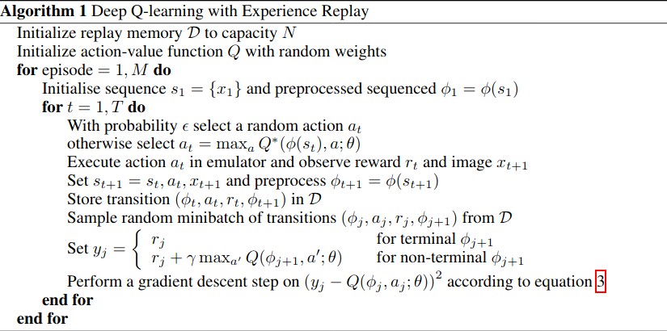

DQN 算法
论文原文: Playing Atari with Deep Reinforcement Learning .
DQN (Deep Q-Networks) 算法, 简单来说就是 Deep Learning + Q Learning.
Q Learning
Q Learning 实际上是维护一个 $Q$ 值表, 这个表可以认为是状态 $s$ 与动作 $a$ 的一个函数 $Q(s,a)$ , 其输出表示在状态 $s$ 下采用动作 $a$ 所获得的期望回报. 通过查询 $Q$ 值表, 就可以找出在某个状态 $s_t$ 下的最佳动作 $a_t$ . Q Learning 算法的要点就在于得到一个足够真实的 $Q$ 值表. 而 $Q$ 值表的更新, 则基于 Bellman 方程 (详情可见RL 基本概念).
DQN
DQN 的核心思想与 Q Learning 一样, 但区别就在于 $Q$ 函数. 在 Q Learning 中, $Q$ 函数是 $Q$ 值表, 也即一个个状态-动作对与期望回报的一一对应, 也就是离散的, 而在一些环境中 (比如 Atari 2600 games) 状态几乎是无穷多的, 根本不可能用 $Q$ 值表来容纳, 于是我们就用回归的方法来解决. 用神经网络 $Q(s,a\mid\theta)$ 来作为 $Q$ 函数从而代替 $Q$ 值表, 而这样的 $Q$ 函数的更新, 也同样基于 Bellman 方程.
数据获取与处理
获取游戏内容的最后 4 帧而不是 1 帧, 目的在于将游戏的动态过程表现出来. $\phi$ 函数保证输入给卷积神经网络的数据的维度固定. 而伪代码中的 $\text{Set}\;s_t+1=s_t,a_t,x_{t+1}$ 使得历史数据得以运用, 这就是为什么论文中说 “每一步的数据都可以在许多次参数更新中起到作用 (Each step of experience is potentially used in many weight updates) .”

输出的优化处理
一般来说, $Q$ 函数是根据状态 $s$ 和动作 $a$ 输出一个值 $r$ , 但是如果在实际中这样设计的话, 如果有 $n$ 个动作, 就要对每个动作都计算一次 $r$ 来得出最佳动作, 也就是计算 $n$ 次 ($n$ 次神经网络的前向传播) . 这样的话, 每次获取 $r$ 的计算时间与动作的个数乘正比, 如果动作数量足够多, 那么算力消耗会很大. 论文中给出了一个更优化的结构, 也就是 $Q$ 函数只依赖与状态 $s$ , 而其输出是传统 $Q$ 函数所有动作的输出结果的一个 array, 这样就可以只计算一次, 得到最佳动作.
疑问
现在还有的疑问就是 $\phi$ 函数究竟要怎样实现呢? 希望大佬们不吝赐教.